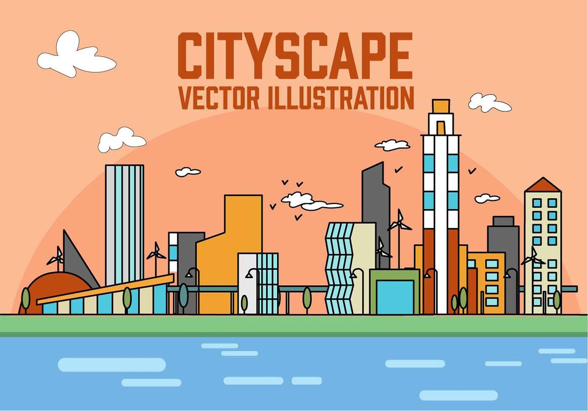

Inteligência Artificial
A evolução das redes neurais atingiu um novo patamar esta semana com o anúncio de modelos de linguagem ainda mais eficientes e integrados ao cotidiano. Grandes empresas do setor apresentaram soluções que prometem automatizar tarefas complexas de análise de dados, transformando a maneira como interagimos com assistentes virtuais e otimizando o fluxo de trabalho em diversas indústrias globais.
 IA Vetores por Vecteezy
IA Vetores por Vecteezy
Gastronomia Sustentável
A culinária baseada em plantas deixou de ser apenas uma tendência de nicho para se tornar o pilar central de grandes restaurantes internacionais. O foco agora é a valorização de ingredientes sazonais e locais, reduzindo a pegada de carbono enquanto se explora sabores complexos através de técnicas de fermentação natural e cozimento lento.
 Gastronomia Vetores por Vecteezy
Gastronomia Vetores por Vecteezy
Cibersegurança e Privacidade
A segurança digital voltou ao centro do debate global após a implementação de novos protocolos de criptografia de ponta a ponta em plataformas de comunicação em massa. Especialistas apontam que, diante do aumento de ataques sofisticados, a adoção de autenticação multifatorial baseada em biometria comportamental será o novo padrão para garantir a integridade dos dados dos usuários.
Cibersegurança Vetores por VecteezyAstronomia e Exploração
A recente descoberta de um exoplaneta em uma zona habitável reacendeu o entusiasmo pela exploração espacial profunda. Observatórios de última geração captaram assinaturas atmosféricas que sugerem a presença de vapor d'água, levando cientistas a reavaliarem nossas teorias sobre a formação de sistemas solares e a possibilidade de vida além da Terra.
 Astronomia Vetores por Vecteezy
Astronomia Vetores por Vecteezy
Bem-estar e Saúde Mental
O conceito de "desconexão planejada" tem ganhado força como uma ferramenta essencial para a manutenção da saúde mental em centros urbanos. Práticas que incentivam pausas regulares de telas e o contato direto com a natureza têm mostrado resultados significativos na redução dos níveis de cortisol e na melhoria da qualidade do sono e do foco criativo.
Saúde E Bem Estar Vetores por VecteezyUrbanismo e Cidades Inteligentes
O planejamento urbano está passando por uma revolução silenciosa com o foco na criação de "cidades de 15 minutos". A ideia é que serviços essenciais, como saúde, educação e lazer, estejam a uma curta distância de caminhada ou bicicleta para todos os residentes, priorizando a convivência humana em detrimento do tráfego de veículos motorizados.
 Urbanismo Vetores por Vecteezy